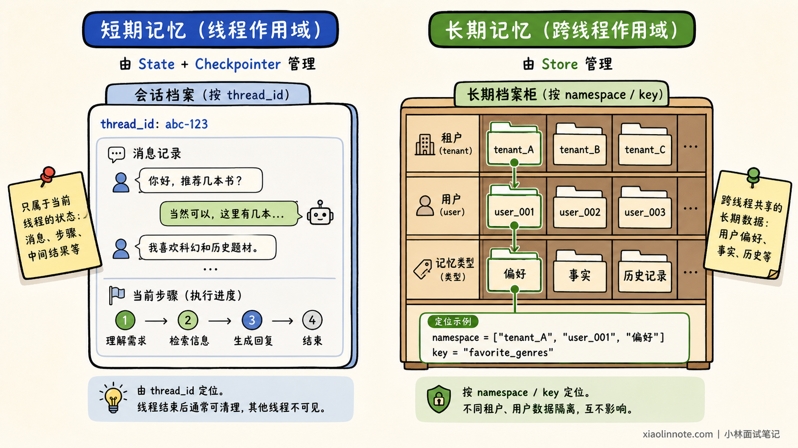
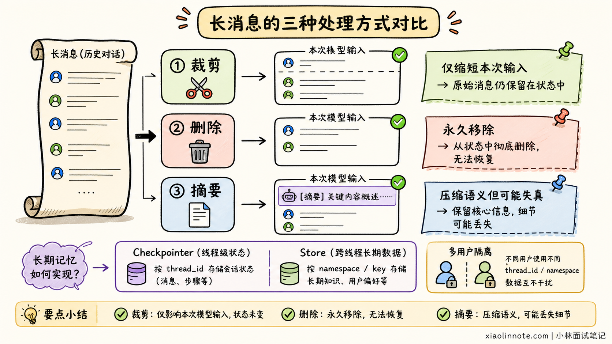
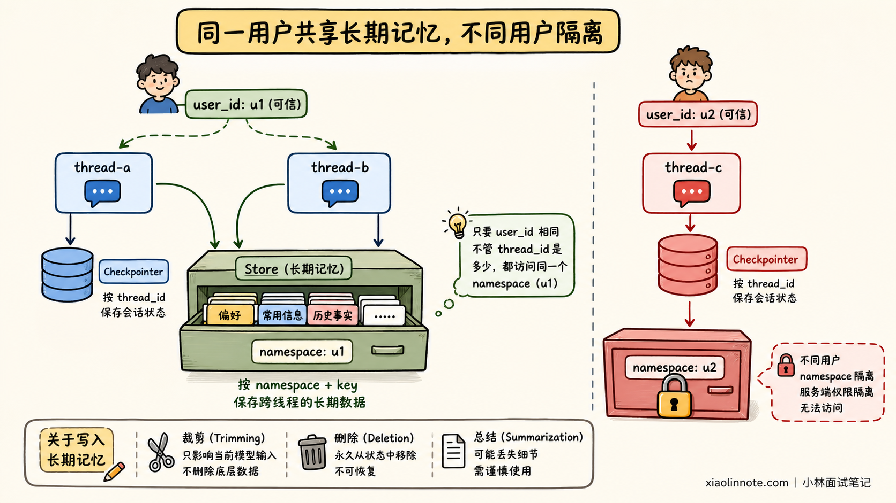
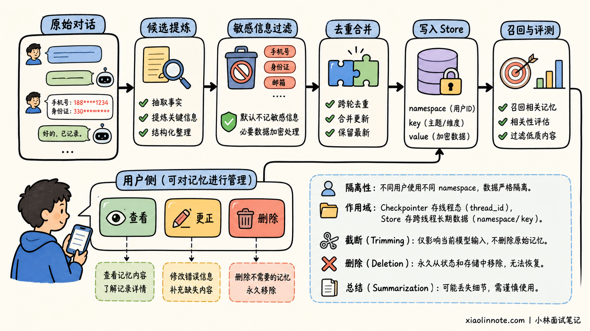

本篇目录
6. LangChain 如何实现短期记忆和长期记忆？
👔面试官：LangChain 中的短期记忆和长期记忆怎么实现？
🙋♂️我：短期记忆就是把最近几轮对话放进 Prompt，长期记忆就是把全部聊天记录存进向量数据库。
👔面试官：全部聊天记录都值得长期保存吗？当前线程状态由谁管理？用户换一个会话后，又如何读取以前的偏好？
🙋♂️我：可以使用 ConversationBufferMemory 和 ConversationSummaryMemory。
👔面试官：这些是旧版 Chain 时代的常见抽象。LangChain v1 新项目应该讲清 Checkpointer、Store、thread_id 和 namespace 的作用。
🙋♂️我：Checkpointer 和 Store 都能把数据保存下来，项目里选择其中一个应该就够了。
👔面试官：它们的作用域完全不同。Checkpointer 保存当前线程的状态，Store 才负责跨线程数据，混用后不是换会话失忆，就是发生用户数据串读。
理解 LangChain 记忆，要看信息存在哪个作用域、如何召回，以及怎样避免串用户、上下文膨胀和错误记忆。
💡 简要回答
在 LangChain v1 中，可以用一句话区分两类记忆：
短期记忆 = State + thread_id + Checkpointer
长期记忆 = namespace/key + Store短期记忆属于当前会话线程。Agent State 保存消息、当前步骤和中间结果；Checkpointer 按 thread_id 保存状态快照。使用同一个 thread_id 再次调用时，可以恢复前面的对话和执行状态。
长期记忆不应该绑定某个线程，而是保存到 Store。Store 使用 namespace 和 key 组织数据，namespace 通常包含租户、用户和记忆类型。即使用户新建了线程，只要使用相同的可信用户身份和 namespace，仍然可以读取以前保存的偏好或经验。
工具可以通过 ToolRuntime 读取当前 State、可信 Context 和长期 Store。用户 ID、租户和权限应由应用运行时注入，不能让模型自己填写。
长对话还需要控制上下文：裁剪只减少本次模型输入，删除会真正移除持久状态，摘要则用更短文本保留主要语义。生产环境要使用数据库型 Checkpointer 和 Store，并做好租户隔离、写入幂等、记忆更正、过期删除、敏感信息保护和检索评测。
📝 详细解析
应该记住什么？
假设用户正在规划杭州旅行。当前对话中提到的日期、预算和下一步计划，只服务于这次任务，属于短期状态。
一周后用户新建会话，Agent 仍然知道他不吃辣、喜欢住地铁附近，这些跨会话仍然有效的信息才属于长期记忆。
记忆设计要先确定作用域，再选数据库。当前线程运行到了哪里，由 State 和 Checkpointer 管理；未来其他线程仍可能使用的用户偏好与事实，才由 Store 管理。

短期记忆如何实现？
LangChain v1 的 create_agent 底层运行在 LangGraph 上。Agent State 默认包含 messages，也可以扩展订单号、当前步骤和工具调用次数等业务字段。
只有 State 还不够。请求可能由不同服务实例处理，进程也可能重启，因此需要 Checkpointer 持久化执行状态。调用 Agent 时传入稳定的 thread_id，同一编号就可以恢复同一线程：
from langchain.agents import create_agent
from langgraph.checkpoint.memory import InMemorySaver
# Checkpointer 按 thread_id 保存线程内的 Agent State
agent = create_agent(
model="openai:gpt-5.4-mini",
tools=[],
checkpointer=InMemorySaver(),
)
# 两次调用复用同一个 thread_id，表示它们属于同一会话线程
config = {"configurable": {"thread_id": "chat-1001"}}
# 第一轮把用户姓名写入当前线程的 messages 状态
agent.invoke(
{"messages": [{"role": "user", "content": "我叫小林"}]},
config=config,
)
# 第二轮会先恢复同一线程之前保存的状态
result = agent.invoke(
{"messages": [{"role": "user", "content": "我叫什么？"}]},
config=config,
)InMemorySaver 只适合本地演示。生产环境要换成持久化实现，否则进程退出后状态会丢失。
Checkpoint 保存的不只是聊天字符串，而是图执行过程中的 State 快照。因此它还可以支撑暂停恢复、人工审批和故障恢复。
消息太多怎么办？
Checkpointer 能保存历史，不代表每次都应该把全部历史交给模型。消息越多，Token、延迟和干扰越大。
常用策略有三种：
| 策略 | 作用 | 主要风险 |
|---|---|---|
| 裁剪 | 只选择部分消息进入本次模型上下文 | 持久状态仍会继续增长 |
| 删除 | 从 State 中永久移除旧消息 | 信息不可恢复 |
| 摘要 | 把早期历史压缩成简短语义摘要 | 可能遗漏细节或逐轮失真 |
客服 Agent 可能需要保护当前工单和用户承诺，代码 Agent 可能需要保护最新报错和修改记录。因此不能只按固定消息条数处理，而应该结合 Token 预算、消息角色和业务重要性制定策略。

长期记忆如何实现？
新 thread_id 默认不会继承旧线程的 State，这是正确的线程隔离。如果某条信息需要跨线程使用，就应提炼后写入 Store。
Store 中的数据通常使用下面的结构定位：
namespace = (tenant_id, user_id, memory_type)
key = 某条记忆的稳定标识
value = JSON 数据已知 key 时使用精确读取；需要从多条记忆中按语义查找时，可以配置向量索引后进行搜索。向量检索只是召回方式，不代表所有聊天记录都应该成为长期记忆。
长期记忆常见内容可以简单分为：
| 类型 | 示例 |
|---|---|
| 用户事实与偏好 | 不吃辣、偏好中文、常用 Java |
| 历史经验 | 上次如何成功处理支付超时 |
| 工作规则 | 退款前必须核验订单归属 |
这些分类用于帮助设计数据结构，不是要求把每段原始对话都永久保存。写入前仍要做去重、脱敏、冲突处理和质量判断。
如何跨线程读取？
工具可以通过 ToolRuntime 访问这些信息，但不能把三个入口混成一个数据袋。当前线程的短期状态来自 runtime.state，可信用户身份和权限来自 runtime.context，只有跨线程长期数据才从 runtime.store 读取。
from dataclasses import dataclass
from langchain.tools import ToolRuntime, tool
@dataclass
class UserContext:
# 用户身份由可信应用注入，不暴露给模型填写
user_id: str
@tool
def remember_preference(
preference: str,
runtime: ToolRuntime[UserContext],
) -> str:
"""保存当前用户明确要求记住的偏好。"""
# namespace 将不同用户的长期记忆隔离开
namespace = (runtime.context.user_id, "preferences")
# key 为 main，本例只维护一条当前偏好记录
runtime.store.put(namespace, "main", {"text": preference})
return "偏好已保存"模型只负责生成 preference，user_id 由已认证的应用通过 Context 注入。这样可以防止模型填错身份或被提示注入诱导访问其他用户的数据。
两个不同 thread_id 的会话，只要可信 user_id 相同，就可以访问同一个长期记忆 namespace；另一位用户则应被 namespace 和服务端权限隔离。

什么时候写入长期记忆？
长期记忆不是越多越好。把每句闲聊都存进去，会产生噪声、冲突和隐私风险。
用户明确说「请记住」时，可以在主链路中实时写入，使信息立即生效。普通对话中推断出的偏好和经验，更适合在会话结束后由后台任务提炼、去重和脱敏，再写入 Store。
无论实时还是后台写入，都应保存来源、时间和置信度，并支持更新、纠错和删除。订单金额、账户余额和库存等实时事实仍应查询权威业务系统，不能使用长期记忆代替真实数据库。
生产环境要注意什么？
把记忆从 Demo 带到生产，先要确认数据能否可靠保存。开发时的内存实现会随着进程退出而丢失，线上需要数据库型 Checkpointer 和 Store，并把表结构与迁移一起纳入部署流程。
数据保存下来后，紧接着要解决「这是谁的记忆」。thread_id、tenant_id 和 user_id 必须来自可信身份体系，不能相信模型生成的身份，也不能让客户端随意指定另一个用户的 namespace。否则记得越多，越容易造成跨用户数据泄露。
隔离做好以后，还要承认记忆会过时、会冲突，也会被用户纠正。系统要能够去重、更新和过期淘汰，同时支持用户查看、更正、导出和删除。敏感信息则默认不记，确实需要保存的数据要加密并限制访问，日志与 Trace 也不能成为隐私的另一个泄漏口。
最后才是判断这套记忆到底有没有用。评测不能只看「成功写入多少条」，而要沿着整条链路检查：这条信息是否值得写入，相关问题能否召回，无关问题会不会误召回，注入模型后是否真正改善答案。只有写入、召回和使用三步都有效，记忆才不是一个不断膨胀的数据库。

旧 Memory 还能用吗？
旧教程常见的 ConversationBufferMemory、ConversationSummaryMemory 等属于 Chain 时代的抽象，目前主要位于 langchain-classic，适合维护存量项目。
LangChain v1 新项目更推荐使用：
AgentState + Checkpointer -> 管理线程内状态
Store + namespace/key -> 管理跨线程长期记忆
Middleware 或图节点 -> 管理裁剪、摘要和写入策略这套方式把状态作用域、持久化和记忆治理拆得更清楚，也更适合有工具调用、暂停恢复和多用户隔离要求的 Agent。
🎯 面试总结
先说清楚两条主线：短期记忆是线程级 State，由 Checkpointer 按 thread_id 保存；长期记忆是跨线程数据，由 Store 按 namespace 和 key 管理。
接着说明 ToolRuntime 的边界：模型只生成任务参数，可信用户身份通过 Context 注入，工具再访问当前 State 和长期 Store。这样即使用户更换线程，也能读取自己的长期偏好，同时避免跨用户数据泄露。
长上下文治理和生产要求也要交代：消息需要裁剪、删除或摘要；线上使用持久化后端，并做好租户隔离、幂等写入、冲突更正、过期删除、隐私保护和召回评测。旧式 Conversation*Memory 可以维护存量项目，但不再是 v1 新项目的主路径。
📚 参考资料
- LangChain 官方文档：Memory 概览
- LangChain 官方文档：Short-term Memory
- LangChain 官方文档：Long-term Memory
- LangGraph 官方文档：Persistence
- LangGraph 官方文档：Memory
- LangChain 官方文档：Tools 与 ToolRuntime
- langchain-classic 官方 API Reference
对了，AI Agent的面试题会在「公众号@小林面试笔记题」持续更新，林友们赶紧关注起来，别错过最新干货哦！